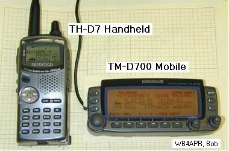
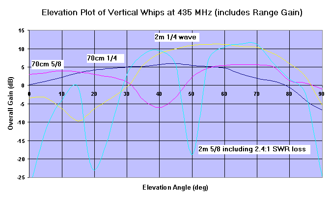

APRS Satellite Traffic and Reporting System
 Bob Bruninga, WB4APR
Bob Bruninga, WB4APR
See current APRS Satellties links.
ASTARS and this page began in the mid-90's with the first Amateur Packet Radio relay satellites and experiments on the ISS and MIR and ultimately other amateur satelltes listed below. ASTARS stands for APRS Satellite Tracking and Reporting System and refers to digital relay satellites and the global APRS internet linked system of ground stations that tie it all together into full time 24/7 access to the two live downlinks listed below. APRS satellite missions dating back to 1998 (see list below) also allow end-user-to-end user real-time digital data exchange typically between mobiles and handheld radios. . Text Messaging from handhelds is easy using any of the Kenwood or Yaesu APRS walkie-talkies. See the 2008 Satellite Simulated Emergency Test page.
Live APRS Satellite Downlinks:
Tracking LEO birds: Although there are dozens of satellite tracking programs for predicting passes, there are also simplified manual methods that also work when you dont have access to a PC or the internet on a daily basis. See how. Or you can use prediction software to determine all the passes for a single day. For example, see the pass plan for Field Day 2002 when there were 9 amateur digital relay satellites operational providing passes all day long giving excellent satellite contact alternatives to the overcrowded Voice FM birds. You also do not need full AZ/EL antenna systems since a simple $70 TV rotator can provide excellent signals 98% of the time as good as the typical $700 AZ/EL rotator.
Amateur Operating Areas: Although congestion over the USA and Europe make communications challenging via many of the FM voice satellites, the short duration of Packet make it orders of magnitude easier. This, plus the global connectivity of APRS groundstations make operating in any part of the world a breeze. The map below shows how the density of amateur radio operators across the globe is very uneven. With the USA and Europe containing the highest density and therefore, congestion, compared to remote areas such as Hawaii where amateur radio operators have almost exclusive uncongested access. Remember, more than half of the world has nearly zero satellite uplink congestion, so if you travel in these less dense areas, take your satellite HT and enjoy un-congested operation!

SATELLITES: The following satellites in reverse chronological order have (or will) support ASTARS. [All downlinks can be seen on the APRS satellite downlink Page ]:

ASTARS is an Amateur Radio Mobile Tracking and Communications System for Reporting position, status, and messages to and from Handhelds and Mobiles in distant locations via Amateur Satellites using off-the-shelf amateur equipment. [See W4HFZ's Installation]. Example digital communicating Handhelds and Mobiles are shown below. Further, using the remote control capability of these radios makes it possible to operate a complete automatic tracking/tuning rotator controlled suit-case portable system that can be operated over any length of 8 conductor wire. Great for demos, or vacation operating from your motel room. See also the Rotator interface and Click here for D700 SETUP
![[See W4HFZ's Installation]](http://www.aprs.org/astars/W4HFZ-mobile.jpg){kind=link}
{kind=link}
1200 Baud PSK ASTARS was a sytem called TRAKNET which was presented at the 1998 and 99 AMSAT conferences as a 1200 baud mobile satellite network using AO16 and IO26 (LO19 is inop) which have been authorized for live APRS tracking and position reporting. PSK ASTARS was used by 16 stations during the annual Army/Navy Footbal run and other special events. It is a very viable capability for stations with PSK TNC's or using KA2UPW's sound-card uplink capability. Since all birds share the same 145.900 uplink, the goal was to set the UI-DIGI callsign on all birds to the SAME generic call, so that mobiles did NOT need to change any settings between satellite passes and therefore get over 12 passes a day from this constellation.. We had hoped to see SOUND-CARD only implementations of the special PSK modems making AO-16 and IO-26 very popular 2-way digital communications satellites again, but no one has risen to the challenge..
1200 Baud AFSK ASTARS The TRAKNET concept was demonstrated many times during experiments with the Space Station MIR packet system and SAREX. The Kenwood THD7 Handheld (or mobile D700) with built in 1200 and 9600 baud TNC's can be used for two-way self-contained APRS communications via SAREX, PCsat, and ISS at 1200 baud. During a test in June 99, over 55 stations conducted 2 way HT-to-HT message communications. Although some think that 1200 baud PACKET is passe', it is PERFECT for HT-SATELLITE digipeater communications. The 9 dB advantage of 2m to a handheld 2m antenna cannot be beat on any other band. Satellites with this capability are SAREX, PCsat and ISS. (MIR, and SUNSAT have died).
US NAval Academy Satetllites: During the 30 years that WB4APR was at the Academy (1990-2020) over a dozen APRS Amateur Satellites were ementored as student projects and many were launched. See APRs Satelltie links. Starting about 2013 the FCC was uncoorperative and fought all USNA studnet projects as being "government" satelliites and not amateur even though the missions were 100% Amateur AX.25, and DTMF, and SStV transponders. Fortunately, they approved PSAT2 and BRICSAT2 at the last minutes.
9600 BAUD ASTARS became a reality when Kenwood introduced the 1200/9600 baud APRS data mobile radios, the TM-D700A and the TH-D7(G) Handheld. These dual band data radios with built-in TNC's and front panel APRS displays make it possible to send and receive the very short APRS style comunications via any 9600 Baud PACSAT if digipeat is enabled (such as UO-22 and ECHO). Thus, these two radios are off-the-shelf satellite data terminals ready for ASTARS and they need NO PC or other accessory. They can send and receive all data on the radio front panel with only the proper mobile whip antenna! (see below).
{kind=link}
INTERNET (SatGates): The presence of the Internet makes possible the linking together of multiple disparate downlink sites all over the world to yield a tremendous gain in reliability through space and time diversity reception. These SAT-Gates combine all packets heard into the existing worldwide APRS infrastructure for delivery to any compatible APRS station in the network. See how to set up a simple SatGate using ALOGGER
This WEB PAGE describes ASTARS, beginning with its Limitations, expected Operations scenario, the TMD700 and THD7 set up for mobile operation, Linking traffic to/from the worldwide APRServe system via SAT-Gates, how the SAT-Gates operate, and how the terrestrial APRS system can distribute satellite access times to the mobiles using minimum bandwidth on the terrestrial system.
EXAMPLE: The APRS Mic-E format used by the Kenwood radios transmits
all of the following information in only 9 data bytes except for the
STATUS text which adds 1-for-1 to the length of the packet. Thus,
a lot of infomation can be transmitted in less than 0.5 second per
mobile. Here is an example pass as received on a Mobile D700:
MODES: The performance of the mobile-satelllite LINK is very dependent on the Satellite MODE and on the transmtter power. This WEB page was originally written around the concept of the existing Mode-J PACSATS (like UO-22 and ECHO), but it was modified to include the opposite characteristics of the Mode-B SUNSAT. The characteristics vary by as much as 9 dB depending on whether the uplink or downlink is VHF or UHF. Now with OPAL, ISS, PCsat and Sapphire we also have the traditional same-band digipeating too. Here are the differences:
OPERATING LIMITATIONS: The 2-meter side of these satellite links are trivial to do and work fine from any mobile omni antenna. Thus PCsat, SAREX and ISS are currently the best ASTARS systems on orbit. The difficulty of the UHF links in mode-B and mode-J have several limitations that complicate the operational scenario on those birds:
APRS MESSAGES: For satellite operators unfamiliar with APRS messages, it should be understood that an APRS message is a single LINE of text. Most messages stand alone, but are occassionaly strung together if it wont fit on one line. Here is a photo of a 15 byte message received on the TMD700 radio. (The maximum length is 64 bytes).
{kind=link}
APRS EMAIL: Simillarly, any APRS operator can initiate an EMAIL (see how) message from his HT or mobile radio. Just like other APRS messages, it is also only ONE LINE and the one line INCLUDES the full email address. This forces brevity! Here is an Email I transmitted from my D700 mobile enroute to work one day. Notice that the SINGLE packet entered into the D700 was simply:
Yet, here is how it was received by my Email system after being SAT-Gated to APRServe and from there, picked up by the EMAIL Engine at WU2Z's and shipped out as regular Email:

OPERATIONS SCENARIO: To develop a viable satellite communications system that can communicate between mobiles and also to/from the worldwide APRServe system within these limitations, the following operating scenario is what we envision when fully operational:
SAT-GATE OPERATIONS: Mobile-to-mobile communications works without any special considerations on the satellite or on the ground. But the more useful application is sending and receiving messages to any other APRS station via SAT-Gates that are monitoring the satellite downlink and serving as gateways into the world wide APRServe system. These SAT-Gates perform the following functions:
OMNI NO-TRACK SAT-GATES With simple antennas (such as a 19+" whip antenna over a large groundplane (the roof of your car)) any TMD700 radio becomes a no-track SAT-GATE downlink receiver. The WHIP will bring in signals whenever the satellite is above about 20 degrees which is about 5 minutes for a nominal high-elevation pass. Note, a 19+" whip is a 1/4 wave antenna at the 2m uplink, and 3/4 wave at the 435 downlink. The 3/4 wave antenna has almost 8 dBi high elevation gain ideal for this application. It is not good on the horizon, but mobiles do not see the horizon and the satellite is 6 dB further away anyway. See plots below.
ADD A TV ROTATOR! After monitoring the birds for a year with the whip, I decided I would rather hear the other 2/3rds of all the data when the birds are below 20 degrees, and so I added a simple $20 rotator interface to my APRStk software to control the ubiquitous 24 AC TV rotator that you can get anywhere. See my APRS Rotator
Unlike previous amateur satellite activity, we can combine the outputs from a dozen such omni stations nationwide and the result is over a 99.96% chance of capturing every packet over the USA! Even if only 4 stations at any one time have the bird in view of their station and even if they only have a 60% chance of decoding each packet, their combined probability is 98%. But if the original packet is replicated TWICE, then this probability becomes 99.96%! A Certainty! (Even an $88 Alinco HT can be used as a downlink station)

This map shows how 6 ground stations limited to solid downlinks only while the satellite is above 30 degrees using only 20" whip antennas can see the satellite anywhere over the USA. Note, the signal above 30 deg is +7 dB closer and maybe +3 dB in the gain lobe of the 3/4 wave whip for an equivalent of +10 dB. THus no packets will be lost. Actually, we would like to see a dozen such downlink stations to provide the added reliability to 99.96%. THis is easy to do. We already have dozens of similar APRServe I-GATES. All they need to do is add a D700 at their station and a whip antenna... NEWS! APRStk (see below) now AUTO TUNES for any satellite in view!
RANDOM NO-TRACK-NO-TUNE SAT-GATES: Where can we find enough D700's for this project? EASY! In every parking lot and driveway across America! Most D700 mobiles are not in use most of the time, but are installed in vehicles with perfect sky visibility and with excellent low loss OMNI antennas. Simply leave a 3 wire DB-9 wire by your driveway going inside to your APRS system and plug it into the D700 every time you park. Bingo, you are contributing to the APRS downlink!
EASIER STILL! Simply program a PM memory for the D700 TNC to listen on the satellite downlink and Transmit on 144.39. Then every packet from the downlink will be digipeated to YOUR home station for entry into the APRS internet system. Or, when your handheld THD7 is not in use, hook it up. Why let these radios go to waste, when they could serve others! WOW, talk about a boot-strap nationwide Satellite Gateway system!
SATELLITES: In the 1990's the 9600 baud digital downlinks used the PACSAT protocol which is very effecient for delivering large files to many users. Our 1 packet every-now-and-then presence on the uplink is insignificant to others uploading to the bird. The currently active PACSAT satelilte offeing 9600 baud APRS conventional digipeating is FalsconSAT-3. See the Live Telemetry, and look for user packets via PFS3-1.
SATELLITE TRACKING AND PASS PREDICTIONS: APRS mobiles should only uplink during the actual satellite pass to keep the uplink clear of non-essential transmissions. To this end, we have two very good methods:

Using APRStk in this manner to alert everyone on the APRS frequency including mobiles and handhelds to satellites inview can be thought of almost as a "WEB" server to your radio's front panel. The 10 minute schedule is transmitted to the radio's DX-LIST. Thus, our mobile satellite users can get the PASS info they need without lugging along a laptop. This shows you what the Handheld THD7 HT will capture and display about the satellites. First is the DX-SPOT list showing that there are three satellites UO22, AO27 and UO14 coming up in the next 80 minutes and when.


The next two screens show when the satellite is in view. They show the Range, Azimuth Uplink and Downlink Frequencies, Doppler and distance to the satellite. Just perfect for aiming your handheld antenna. For more details see APRS Satellite Resources.
CLICK HERE to see the D-700 display of a satellite object.
{kind=link}
If you already have APRSdos, download either APRStk or APRSdata. If you dont already have APRSdos installed, then download APRS848 too and install it first with PKUNZIP -d or WinZIP.
TM-D700 and TH-D7(G) SETTINGS: Here is a list of my minimum setups for the new Kenwood TM-D700 data mobile and TH-D7(G)data handheld for front-panel-to-Satellite mobile communications via a digipeating PACSAT in Mode-J or Mode-B:

TRANSMITTING: Notice, the new D7(G) has the DCD SENSE command so that the TNC will operate full duplex in APRS mode. BUT, In APRS mode, the D700 does not have this ability to set the internal TNC to FULLDUPLEX. THus, while your D700 mobile receive BAND is receiveing data the radio will not transmit. Understanding this problem will be your key to success. If the Satellite has periodic quiet times on the downlink (SUNSAT) then operate normally. It will get a chance to key up. But if the downlink is 100% in use as is normal for UO-22 and all the other PACSATS, then here are some ways to force a transmit:
ANTENNAS: Because of the short coax run in a car, and no need for a PREAMP, a simple 19+" 2m WHIP antenna in the center of your car roof is an ideal mobile OMNI antenna for both VHF and UHF satellites. On UHF, the antenna is a 3/4 wavelength whip with an 8 dBi lobe at high elevations which is ideal for the satellite near the center of the pass (yellow plot below). My D700 will capture packets when the PACSATS are above 25 to 30 degrees for a few minutes, (lower for UO14 and SUNSAT) But to gain the full downlink, a handheld 4 element or so UHF downlink antenna rotated in AZ, EL and polarity is required. Much experimentation in this area is needed. Here is a plot of the EZ-NEC produced gains of three whip antennas including the path loss due to range. My 3/4 wavelength antenna picks up the sats at about 20 deg. Better than shown here.

To validate the data for the 3/4 wave vertical, I built a 1575 MHz scale model of the antenna AND car roof and connected it to a GPS receiver and my SIGPLOT.BAS program. Letting it run all night, gives an all-sky GAIN PLOT using the satellite signal strengths as the RF source. Thus, over time, you get known RF from all angles and all azimuths and the SIGPLOT program produces a real-world plot of actual antenna pattern as shown below. I did it twice, the Green is the 3/4 and Red is the 1/4 wave. Notice the high angle gain of the 3/4 at all angles above about 25 deg. Although the 1/4 is better down to about 10 degrees, the 6 dB greater path loss due to the greater distance to the satellite (and trees and buildings) cancels any advantage here for the weak PACSAT downlinks. The car roof I modeled was the size of a compact sedan.

TUNING MODE-J: UHF Down, VHF uplink. Doppler tuning the UHF downlink is trivial to do by ear. Although 9600 baud data sounds just like open-squelch noise, it does have a "quality" to it that can easily be heard by ear when the receiver is not centered in the data bandwidth. All passes begin at +10 KHz and move down in 5 KHz increments down to -10 KHz. It only takes a fraction of a second to test QSY to hear if it is time to tune or not. Eventually you can hear when it is time... For omni antennas where you wont hear the satellite on the distant horizon, then start at +5 and move twice to -5 during the brief pass. SUNSAT and PCsat had a wide UHF uplink receiver and so only -/+ 5 KHz tuning was required.
TUNING MODE-B: VHF down, UHF up. On mode B you must compensate for UPLINK Doppler and it is not easy to do since you are doing it in the blind. But remeber it is OPPOSITE. Start off DOWN 10 or 5 Khz at the start. Tune Up 5 KHz as the pass progresses. Mode B satellites (SUNSAT and PCSAT) should be designed with WIDE receivers so that only 2 steps are needed. +5 and -5 KHz. (The center is so brief as to not be worth tuning).
EFFECTIVENESS: The APRStk screen shot below shows the ANALYZE command which plots the packet count over time (in red) along with the Elevation Angle (in green). This is useful to compare the relative performance of your station. Notice how KO23 has just completed a pass and the packets began being received on my 20" 3/4 wave Omni at about 30 degrees and then it was received all the way down to about 20 degrees. The 5 evenly spaced spikes are local TNC reset data that occurs every time the THD7 is commanded to QSY down 5 Khz. Two other spikes are spurious re-tunes and the big one, I caused by QSYing the radio to 144.39 for a few seconds before I realized I wanted to save this plot. These peaks are not packets from the satellite. The TMD700 does not generate this extra data, since it does not reset the TNC everytime you send a QSY command.

COME JOIN US LIVE ON THE BIRDS!
FUTURE: This ASTARS concept has been approved for operation via many satellties over the years such as AO16, LO19, IO26, SO35, OPAL, SAREX, PCsat1 & 2, Sapphire, ANDE, RAFT and ARISS and all others operating on the unidvewal APRS satelite channel of 145.825 MHz. There is no reason why it cannot be supported on all digital amateur satellite missions once the primary mission or science objectives have been met. We encourage experimentation and consideration for future applications.
This page dates from 1998 or so, but we try to keep it current. See http://www.aprs.org/sats.html.
Return to the APRS HOMEPAGE
. See Sitemap to over 450 of Bob's othe web pages.
.